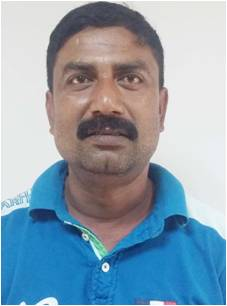

ঢাকা হতে গোপালপুর যাওয়ার জন্য সড়ক ও রেলপথ ব্যবহার করা যায় । সড়ক পথে ঢাকার মহাখালী হতে দ্রুতগামী পরিবহণে গোপালপুর আসা যায় । তাছাড়া কল্যাণপুর বাস স্ট্যান্ড হতে সোনিয়া ও বিনিময় পরিবহনের এসি বাসের মাধ্যমে টাংগাইল ও ঘাটাইল হয়ে গোপালপুর আসা যায় ।
পাশা পাশি কমলাপুর ও এয়ারপোর্ট রেল স্টেশন হতে ট্রেনে টাংগাইল/ইব্রাহীমাবাদ (বঙ্গবন্ধু সেতু পূর্ব)স্টেশনে নেমে সিএনজি যোগে গোপালপুর যাওয়া যায় । এছাড়া ময়মনসিংহ হতে জামালপুর হয়ে একটি ট্রেন গোপালপুরের হেমনগর রেল স্টেশনে আসে ।
গোপালপুর উপজেলার নন্দনপুর বাস স্টেশন থেকে সকাল ৫.৩০ থেকে শুরু করে রাত ১০.০০ পর্যন্ত পর্যায়ক্রমে বাংলাদেশের রাজধানী ঢাকা পর্যন্ত ছেড়ে যায় দ্রুতগামী পরিবহন ।
মোঃ জিল্লুর রহমান শিহাব
পদবীঃ সভাপতি
টাঙ্গাইল জেলা বাস-মিনিবাস মালিক সমিতি গোপালপুর
মোবাইল: ০১৭১৫৯৬৯৯৭৫
ইমেইলঃ zillurrahman9750@gmail.com
মোঃ রফিকুল কিবরিয়া দুলাল
পদবী: সাধারন সম্পাদক
গোপালপুর ট্রাক মালিক সমিতি
মোবাইল: ০১৭১১১৭৩০৫০

মোঃ শাহীন সিদ্দিকী
পদবী: সাধারন সম্পাদক
ট্রাক শ্রমিক ইউনিয়ন
মোবাইল: ০১৭১২১৩৪১০৩